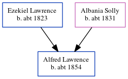

Alfred Lawrence c1854 -
[ Home ] | [ Calendar ] | [ Surnames Index ] | [ Census Index ] | [ Family History ]The child of Ezekiel Lawrence (a laborer bricklayer) and Albania Solly, Alfred Lawrence, the first cousin three-times-removed on the mother's side of Nigel Horne, was born in Lydden, Kent, England c. 1854 and baptized in St Lawrence, Thanet, Kent, England on Dec 3, 1854. On Apr 7, 1861, he was living at Broad Street, Ramsgate, Kent, England1.
Parents
- Ezekiel was born c. 1823
- Albania was born c. 1831
Citations
- 1861 England, Wales & Scotland Census - Findmypast (was age 7 and the son of the head of the household)
Media
1861 England, Wales & Scotland Census - GBC/1861/0003533515
England Births & Baptisms 1538-1975 - R_884654095
Kent Baptisms - GBPRS/CANT/B/96403913
Family Tree
Generated by ged2site. Last updated on Jun 11, 2024